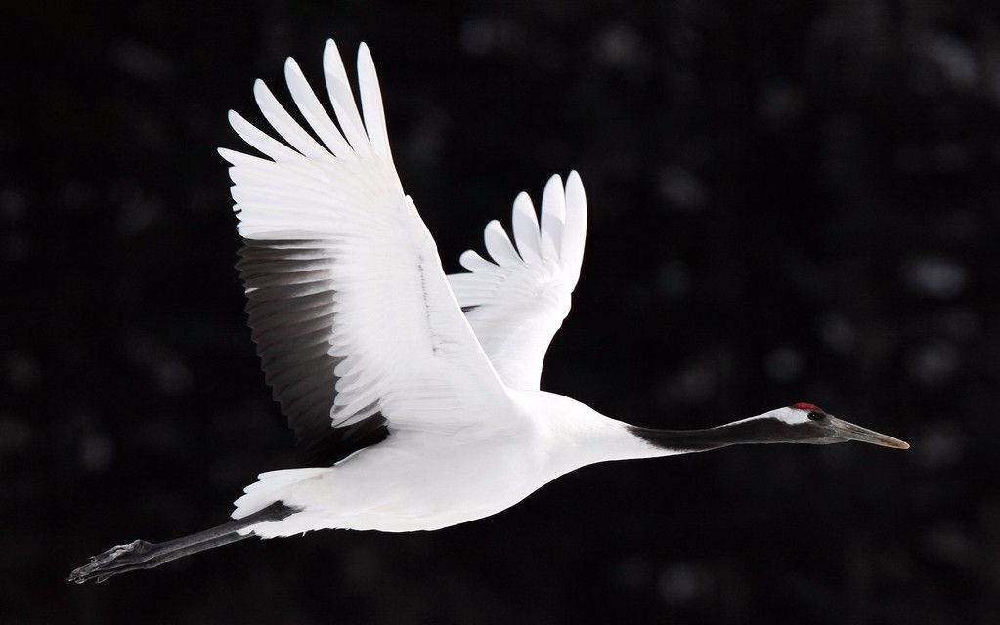
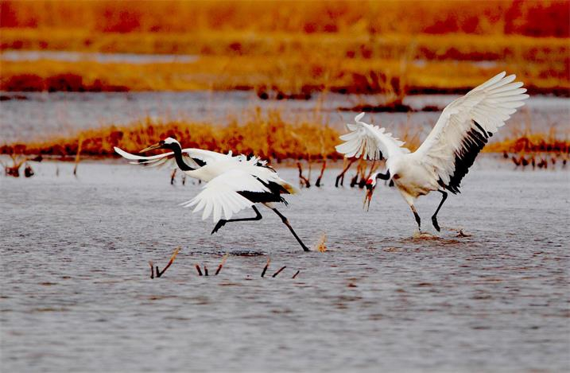
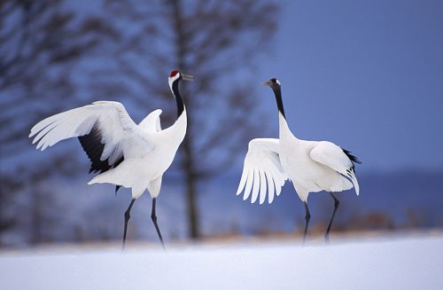

丹顶鹤
物种命名
丹顶鹤的拉丁文学名Grus japonensis（中文意译“日本鹤”），是德国动物学家斯塔提乌斯·穆勒（Philipp Ludwig Statius Müller）于1776年命名的。穆勒曾在埃尔兰根（Erlangen）教授自然科学。1773年至1776年，他翻译出版了林奈的名著《自然系统》，并公布了一些新命名的物种。这次被命名的生物就包括丹顶鹤。穆勒命名丹顶鹤的1776年，在美国为建国元年。这一年在中国则为清高宗乾隆四十一年，在日本则为后桃园天皇安永五年，都值闭关之时。当日，西方人只能从广州认识中国，从长崎认识日本。丹顶鹤自中国东北地区向南迁徙不经过华南地区，却以日本的九州、本州作为过冬之地。因此，西方人只能以日本为窗口，见识到这种动物。将其命名为“日本鹤”。
19世纪末期至20世纪初，日本本州岛的丹顶鹤灭绝了。有些动物学家认为，这个品种在日本就此灭绝，因此将它的英文俗名由Japanese Crane，改为Manchurian Crane（满洲鹤），只是这种用法并未被广泛接受。Japanese Crane和Manchurian Crane两个名字一直共同存在，造成了一些混乱，因此，前国际鹤类基金会主席乔治·阿奇博（Archbold）提出建议，将丹顶鹤的英文俗名改作Red-crowned Crane（丹顶鹤）。尽管如此，英文世界“日本鹤”的提法依然是主流。
在谷歌搜索引擎（google）中，另两种称呼的搜索结果仅为其十分之一。（补注：郑作新教授在1980年的国际鹤类学术讨论会上，针对丹顶鹤名称叫法不统一的情况，提出过为丹顶鹤正名的意见，并在会议上得到通过。此后国际学术会议和著作文献中就沿用此名称。）
形态特征
丹顶鹤体长约160厘米，翼展240厘米，体重7000至10000克。全身几纯白色，头顶裸露无羽、呈朱红色，额和眼先微具黑羽，眼后方耳羽至枕白色，颊、喉和颈黑色；次级飞羽和三级飞羽黑色，三级飞羽长而弯曲，呈弓状，覆盖于尾上，因此，站立时尾部黑色，实际是三级飞羽，而尾、初级飞羽和整个体羽全为白色，飞翔时极明显。嘴较长，呈淡绿灰色，颈、腿也都很长，两翅中间长而弯曲的飞羽为黑色，并且在站立时整个飞羽都盖在尾部，常常使人误认为它有一个黑色的尾羽。雌雄相似。
虹膜褐色，嘴灰绿色，尖端黄色。胫裸露部分和跗蹠及趾灰黑色，爪灰色。
雏鸟被有黄褐色的绒羽，背部的颜色浅，腹部较深，肩部为乳白色，嘴和腿均是肉红色，3～4月后体羽逐渐变成洁白的颜色，头顶部的裸露部分则要到10个月以后才出现红色。
丹顶鹤的骨骼外坚内空，强度是人类骨骼的7倍，而且它在迁徙的时候，常常排成巧妙的楔形，使后面的个体能够依次利用前面个体扇翅时所产生的气流，从而进行快速、省力、持久的飞行，时速可达40公里左右，飞行高度可以超过5400米以上，而且能够边飞边鸣。
大小量度：体重♂7000-9000克，♀9000-10500克；体长1200-1520毫米；嘴峰♂151-167毫米，♀135-167毫米；翅♂560-670毫米，♀557-635毫米；尾300毫米；跗蹠♂267-301毫米，♀255-297毫米。（注：♂雄性；♀雌性）
生活习性
活动
常成对或成家族群和小群活动。迁徙季节和冬季，常由数个或数十个家族群结成较大的群体。有时集群多达40-50只，甚至100多只。但活动时仍在一定区域内分散成小群或家族群活动。夜间多栖息于四周环水的浅滩上或苇塘边，彼此仍按家族群分散栖息，天特别冷时则靠得很近。觅食地和夜栖地一般较为固定，通常亮天后，各家族群陆续飞到觅食地觅食，彼此仍保持一定距离。中午时多集中在滩边休息，并不断鸣叫。晚上又陆续飞回夜栖地过夜或留在觅食地过夜。休息时常单腿站立，头转向后插于背羽间。无论觅食或休息时，常有1只成鸟特别警觉，不断抬头四外张望，发现危险时则发出‘ko-lo-lo-’的叫声，鸣叫时头颈向上伸直，仰向天空。当危险迫近时，则腾空飞翔。飞翔时头脚前后伸直，两翅鼓动缓慢，排成‘一’字或‘V’字形。
迁徙
春季于2月末3月初离开越冬地迁往繁殖地，经过中国北戴河的时间在3月中旬至3月末。到达东北繁殖地的时间在4月初至4月中旬，秋季于9月末10月初开始离开繁殖地往南迁徙，迁经北戴河的时间在10月中旬至11月中旬，大量的在11月初。最早到达江苏盐城越冬地的时间在10月28至10月29日，大批在11月下旬到达。常呈小群迁徙，最大结群可到40-50只。迁飞时成‘V’，字形队。
换羽
丹顶鹤成鸟每年换羽两次，春季换成夏羽，秋季换成冬羽，属于完全换羽，会暂时失去飞行能力。
鸣声
丹顶鹤高亢、宏亮的鸣叫声，与其特殊的发音器官有关。它的颈长，鸣管也长，长达约1米以上，是人类气管长度的五六倍，末端卷成环状，盘曲于胸骨之间，就像西洋乐中的铜管乐器一样，发音时能引起强烈的共呜，声音可以传到3一5公里以外。
丹顶鹤鸣声的音调和频率因性别、年龄、行为、环境条件的不同而有很大差异。一般鸣声成串或单一，不仅在起飞时和在空中飞翔的时候鸣叫，而且在地面上取食和栖宿时也在鸣叫。一年四季，几乎每天每时都能听到它的鸣声，但以黎明前后最为频繁。每天在破晓之前，只要有一只率先启鸣，便会有第二只立即应声作答，而后群体中就一连串地彼此呼应，欢闹不止，直至日出。叫声不仅是配偶间和群体成员之间的传情和联络，而且也常用来表示骚动和对危险的警戒，但更重要的则是作为婚偶舞蹈的伴奏曲。
繁殖期的雄鸟在与雌鸟对鸣时，头部朝天，双翅频频振动，在一个节拍里发出一个高昂悠长的单音，雌鸟的头部也抬向天空，但不振翅，在一个节拍里发出两三个短促尖细的复音。这种“二重唱”不仅是对爱情的表白，也是对企图入侵者的警告，而且还能促使雄鸟和雌鸟性行为的同步，保证繁殖的成功。雏鸟的鸣叫声主要有索取食物，保持联系和也许是出于某种生理需要的使劲鸣叫等3种。1岁龄的幼鸟在离开双亲后，有保卫领地以及无目的的鸣叫。2岁以后则有齐鸣、交尾前的鸣叫。此外还有在召唤起飞和报警时的鸣叫，营巢时的鸣叫等等。
食性
食物很杂，主要有鱼、虾、水生昆虫、软体动物、蝌蚪、沙蚕、蛤蜊、钉螺以及水生植物的茎、叶、块根、球茎和果实等等。
鹤舞
每年3月末4月初，当丹顶鹤到达繁殖地后不久，即开始配对和占领巢域，雄鸟和雌鸟彼此通过在巢域内的不断鸣叫来宣布对领域的占有。求偶时也伴随着鸣叫，而且常常是雄鸟嘴尖朝上，昂起头颈，仰向天空，双翅耸立，引吭高歌，发出“呵，呵，呵”的嘹亮声音。雌鸟则高声应和，然后彼此对鸣、跳跃和舞蹈。舞姿也很优美，或伸颈扬头，或曲膝弯腰，或原地踏步，或跳跃空中，有时还叼起小石子或小树枝抛向空中。
丹顶鹤的舞蹈大多是由几十个、几百个动作的连续变幻，舞蹈的主要动作有伸腰抬头、弯腰、跳跃、跳踢、展翅行走、屈背、鞠躬、衔物等，但姿势、幅度、快慢有所不同。而这些动作及其后续动作，又都有机地结合在一起，如弯腰——伸腰抬头——头急速上下摆动；展翅——伸腰抬头——弯腰；伸腰抬头——弯腰——脚朝下跳跃；展翅弯腰——弯腰行走——颈部和身体呈“八”字形展翅衔物——展翅行走；衔物——跳跃抛物——不变位的体旋转，靠腿力或扇翅做跳跃，弯腰动作等。这些动作大多都有比较明确的目的，例如鞠躬一般表示友好和爱情；全身绷紧的低头敬礼，有表示自身的存在、炫耀、恐吓之意；弯腰和展翅则表示怡然自得、闲适消遣；亮翅有时表示欢快的心情等。
分布范围
分布于中国、日本、韩国、朝鲜民主主义人民共和国、蒙古和俄罗斯联邦。旅鸟：中国台湾省。丹顶鹤繁殖于俄罗斯远东地区的黑龙江和乌苏里江流域和日本北海道，越冬于日本、朝鲜。
中国
内蒙古达来诺尔、乌拉盖、科尔沁、呼伦湖、辉河、嘟噜河下游、迎春、小兴凯湖、兴凯湖，吉林向海、莫莫格，辽宁辽河三角洲，河北北戴河，河南黄河故道，山东长山列岛、寿光、昌邑、潍坊、青岛、平邑、汶上、费县，江苏盐城、洪泽湖、高邮湖、邵伯湖、灌江、如东，上海，河南庞寨、山东日照、云南昭通、中甸。在中国繁殖于东北的黑龙江、吉林、辽宁和内蒙古达里诺尔湖等地。越冬于江苏、上海、山东等地的沿海滩涂，以及长江中、下游地区，偶尔也见于江西鄱阳湖和台湾。迁徙时经过东北南部、华北等地。

群种现状
丹顶鹤需要洁净而开阔的湿地环境作为栖息地，是对湿地环境变化最为敏感的指示生物。由于人口的不断增长，使丹顶鹤的栖息地不断变为农田或城市，例如吉林省西部的月亮泡曾是丹顶鹤的繁殖地，因为人为进行围湖筑堤，使堤内水位上涨，挺水植物带基本消失，堤外湖漫滩干涸，垦为农田，丹顶鹤也从此绝迹；又如江苏北部的邵伯湖与高邮湖之间的沼泽地带，曾是丹顶鹤的越冬地，由于每年到该地渔，牧和狩猎的人不断增多，增加了人为干扰，以及拣卵、偷猎等，使丹顶鹤的数量急剧减少。
全世界的丹顶鹤总数至2010年估计仅有1500只左右，其中在中国境内越冬的有1000只左右，保护好丹顶鹤以及它们的生存环境为越来越多的人们所关注。中国已经建立的以保护丹顶鹤为主的自然保护区已经超过18个，其中的吉林向海、湖南东洞庭湖、青海鸟岛和江西鄱阳湖等还被列入国际上的拉拇萨尔条约保护湿地目录之中，使保护工作取得了很大的进展。